02-git与gitee码云
1.git分支
在前面我们基本了解Git的使用方法，这一节我们看下GIt重要概念【分支】
背景
例如于超老师在开发一个同性交友网站，刚写到登录功能，代码还没写完，今天先睡觉了，所以就commit提交到本地仓库了。
假如这会另一个程序员张三不知道，还直接对这个代码继续开发，这就乱套了。
讲道理，应该这么玩：
1. 分别给于超老师添加一个分支 yuchao，张三一个分支 zhangsan
2. 这俩人基于自己的分支环境去写代码，进行版本提交，却能互不影响
3. 最后将这2人的代码进行合并即可（需要考虑可能存在冲突，手动解决）
1.1 分支命令实践
默认版本仓库只有一个分支，master
查看当前我们在哪一个分支，有星星就是你在哪
此例的意思就是，我们有一个叫做 master 的分支，并且该分支是当前分支。
当你执行 git init 的时候，默认情况下 Git 就会为你创建 master 分支。
如果我们要手动创建一个分支。执行 git branch (branchname) 即可。
[root@www.yuchaoit.cn /home/yuchao/learn_git]#git branch
* master
创建分支
[root@www.yuchaoit.cn /home/yuchao/learn_git]#git branch yuchao
[root@www.yuchaoit.cn /home/yuchao/learn_git]#
[root@www.yuchaoit.cn /home/yuchao/learn_git]#git branch
* master
yuchao
切换分支
1.进入到yuchao分支
[root@www.yuchaoit.cn /home/yuchao/learn_git]#git checkout yuchao
Switched to branch 'yuchao'
[root@www.yuchaoit.cn /home/yuchao/learn_git]#git branch
master
* yuchao
yuchao分支下写代码
这里就是公司里的多个程序员，如何开发同一套系统的流程了。
[root@www.yuchaoit.cn /home/yuchao/learn_git]#ls
hello.sh laoliu.sh
[root@www.yuchaoit.cn /home/yuchao/learn_git]#
[root@www.yuchaoit.cn /home/yuchao/learn_git]#vim hello_world.sh
[root@www.yuchaoit.cn /home/yuchao/learn_git]#git add .[root@www.yuchaoit.cn /home/yuchao/learn_git]#git commit -m 'yuchao 打印了一句话'
[yuchao 164de7b] yuchao 打印了一句话 1 file changed, 1 insertion(+) create mode 100644 hello_world.sh[root@www.yuchaoit.cn /home/yuchao/learn_git]#[root@www.yuchaoit.cn /home/yuchao/learn_git]#lshello.sh hello_world.sh laoliu.sh[root@www.yuchaoit.cn /home/yuchao/learn_git]#git branch master* yuchao[root@www.yuchaoit.cn /home/yuchao/learn_git]#git status# On branch yuchaonothing to commit, working directory clean
切换到master分支
[root@www.yuchaoit.cn /home/yuchao/learn_git]#git checkout master
Switched to branch 'master'[root@www.yuchaoit.cn /home/yuchao/learn_git]#lshello.sh laoliu.sh[root@www.yuchaoit.cn /home/yuchao/learn_git]#git branch
* master
yuchao
你此时只有切到yuchao分支，才能看到代码文件
[root@www.yuchaoit.cn /home/yuchao/learn_git]#git checkout yuchao
Switched to branch 'yuchao'
[root@www.yuchaoit.cn /home/yuchao/learn_git]#ls
hello.sh hello_world.sh laoliu.sh
合并分支
合并yuchao分支的代码到master主干线上来
1.回到master主干分支
[root@www.yuchaoit.cn /home/yuchao/learn_git]#git checkout master
Switched to branch 'master'
[root@www.yuchaoit.cn /home/yuchao/learn_git]#
[root@www.yuchaoit.cn /home/yuchao/learn_git]#git merge yuchao
Updating 049a22f..164de7b
Fast-forward
hello_world.sh | 1 +
1 file changed, 1 insertion(+)
create mode 100644 hello_world.sh
[root@www.yuchaoit.cn /home/yuchao/learn_git]#ls
hello.sh hello_world.sh laoliu.sh
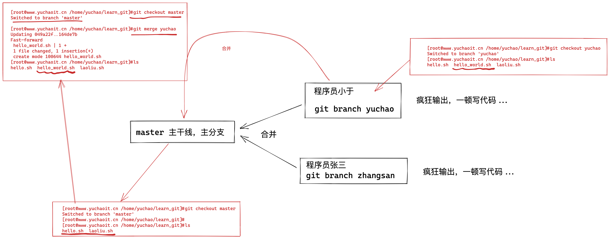
分支冲突
这里是新添加了一个文件，合并数据还好，如果是同一个文件，且同一行数据的修改，岂不是GG？
1.再创建一个分支，zhangsan，搞破坏，且提交代码到版本仓库
创建且切换分支
[root@www.yuchaoit.cn /home/yuchao/learn_git]#git checkout -b zhangsan
Switched to a new branch 'zhangsan'
[root@www.yuchaoit.cn /home/yuchao/learn_git]#
[root@www.yuchaoit.cn /home/yuchao/learn_git]#
[root@www.yuchaoit.cn /home/yuchao/learn_git]#
[root@www.yuchaoit.cn /home/yuchao/learn_git]#echo "我是zhangsan，我就是来搞破坏的，你想咋地吧" >> laoliu.sh
[root@www.yuchaoit.cn /home/yuchao/learn_git]#ls
hello.sh hello_world.sh laoliu.sh
[root@www.yuchaoit.cn /home/yuchao/learn_git]#cat laoliu.sh
加油啊兄弟们，胜利的曙光就要看到了！！
好的超哥，我一定相信自己，加油努力，给自己一个满意的结果！！
兄弟们，git工具，一般是开发人员用的多，我们运维一般也就是上传，下载代码而已了。
我是zhangsan，我就是来搞破坏的，你想咋地吧
[root@www.yuchaoit.cn /home/yuchao/learn_git]#git commit -m 'zhangsan 搞破坏'
[zhangsan 8396a73] zhangsan 搞破坏
1 file changed, 1 insertion(+)
[root@www.yuchaoit.cn /home/yuchao/learn_git]#git log --oneline
8396a73 zhangsan 搞破坏
164de7b yuchao 打印了一句话
049a22f v1 hello.sh
e9547df v3 就玩三次吧
9a3bd4d v2 添加了第二行数据
fb118ba first commit with line 1
2.切换回master分支，别合并，先修改同一个文件，注意提交到版本仓库
[root@www.yuchaoit.cn /home/yuchao/learn_git]#git checkout master
Switched to branch 'master'
[root@www.yuchaoit.cn /home/yuchao/learn_git]#
[root@www.yuchaoit.cn /home/yuchao/learn_git]#vim laoliu.sh
[root@www.yuchaoit.cn /home/yuchao/learn_git]#
[root@www.yuchaoit.cn /home/yuchao/learn_git]#
[root@www.yuchaoit.cn /home/yuchao/learn_git]#cat laoliu.sh -n
1 加油啊兄弟们，胜利的曙光就要看到了！！
2 好的超哥，我一定相信自己，加油努力，给自己一个满意的结果！！
3
4 兄弟们，git工具，一般是开发人员用的多，我们运维一般也就是上传，下载代码而已了。
5 兄弟们，我是master，我在第5行写了一句话
[root@www.yuchaoit.cn /home/yuchao/learn_git]#
[root@www.yuchaoit.cn /home/yuchao/learn_git]#git add .
[root@www.yuchaoit.cn /home/yuchao/learn_git]#
[root@www.yuchaoit.cn /home/yuchao/learn_git]#
[root@www.yuchaoit.cn /home/yuchao/learn_git]#git commit -m 'master 也修改了laoliu.sh'
[master 5be8816] master 也修改了laoliu.sh
1 file changed, 1 insertion(+)
[root@www.yuchaoit.cn /home/yuchao/learn_git]#
[root@www.yuchaoit.cn /home/yuchao/learn_git]#git status
# On branch master
nothing to commit, working directory clean
[root@www.yuchaoit.cn /home/yuchao/learn_git]#git log --oneline -4
5be8816 master 也修改了laoliu.sh
164de7b yuchao 打印了一句话
049a22f v1 hello.sh
e9547df v3 就玩三次吧
3.试试这回合并代码呢？master和zhangsan修改了同一行数据
[root@www.yuchaoit.cn /home/yuchao/learn_git]#
[root@www.yuchaoit.cn /home/yuchao/learn_git]#git merge zhangsan
Auto-merging laoliu.sh
CONFLICT (content): Merge conflict in laoliu.sh
Automatic merge failed; fix conflicts and then commit the result.
[root@www.yuchaoit.cn /home/yuchao/learn_git]#
[root@www.yuchaoit.cn /home/yuchao/learn_git]#
[root@www.yuchaoit.cn /home/yuchao/learn_git]#git status
# On branch master
# You have unmerged paths.
# (fix conflicts and run "git commit")
#
# Unmerged paths:
# (use "git add <file>..." to mark resolution)
#
# both modified: laoliu.sh
#
no changes added to commit (use "git add" and/or "git commit -a")
[root@www.yuchaoit.cn /home/yuchao/learn_git]#
[root@www.yuchaoit.cn /home/yuchao/learn_git]#
[root@www.yuchaoit.cn /home/yuchao/learn_git]#cat laoliu.sh
加油啊兄弟们，胜利的曙光就要看到了！！
好的超哥，我一定相信自己，加油努力，给自己一个满意的结果！！
兄弟们，git工具，一般是开发人员用的多，我们运维一般也就是上传，下载代码而已了。
<<<<<<< HEAD
兄弟们，我是master，我在第5行写了一句话
=======
我是zhangsan，我就是来搞破坏的，你想咋地吧
>>>>>>> zhangsan
很明显，这里报错了，出现了冲突
4.手工解决冲突即可
这时候你作为技术老大，决定哪一行有用，哪一行没用，还是都保留。
git使用`<<<<<<<<<,=========,>>>>>>>>`符号分割冲突的内容，手动删除这些符号，并修改成你想要的内容
修改结果如下
[root@www.yuchaoit.cn /home/yuchao/learn_git]#cat laoliu.sh
加油啊兄弟们，胜利的曙光就要看到了！！
好的超哥，我一定相信自己，加油努力，给自己一个满意的结果！！
兄弟们，git工具，一般是开发人员用的多，我们运维一般也就是上传，下载代码而已了。
兄弟们，我是master，我在第5行写了一句话
我是zhangsan，我就是来搞破坏的，你想咋地吧
[root@www.yuchaoit.cn /home/yuchao/learn_git]#
提交新版本即可
[root@www.yuchaoit.cn /home/yuchao/learn_git]#git commit -m 'master fix both modified laoliu.sh'
[master 07f7d81] master fix both modified laoliu.sh
[root@www.yuchaoit.cn /home/yuchao/learn_git]#git status
# On branch master
nothing to commit, working directory clean
[root@www.yuchaoit.cn /home/yuchao/learn_git]#
[root@www.yuchaoit.cn /home/yuchao/learn_git]#
[root@www.yuchaoit.cn /home/yuchao/learn_git]#git log --oneline -3
07f7d81 master fix both modified laoliu.sh
5be8816 master 也修改了laoliu.sh
8396a73 zhangsan 搞破坏
1.2 删除分支
注意不能删除当前分支
删除其他即可
[root@www.yuchaoit.cn /home/yuchao/learn_git]#git checkout master
Already on 'master'
[root@www.yuchaoit.cn /home/yuchao/learn_git]#
[root@www.yuchaoit.cn /home/yuchao/learn_git]#git branch
* master
yuchao
zhangsan
[root@www.yuchaoit.cn /home/yuchao/learn_git]#
[root@www.yuchaoit.cn /home/yuchao/learn_git]#
[root@www.yuchaoit.cn /home/yuchao/learn_git]#git branch -d yuchao zhangsan
Deleted branch yuchao (was 164de7b).
Deleted branch zhangsan (was 8396a73).
[root@www.yuchaoit.cn /home/yuchao/learn_git]#
[root@www.yuchaoit.cn /home/yuchao/learn_git]#git branch
* master
1.3 码云的分支
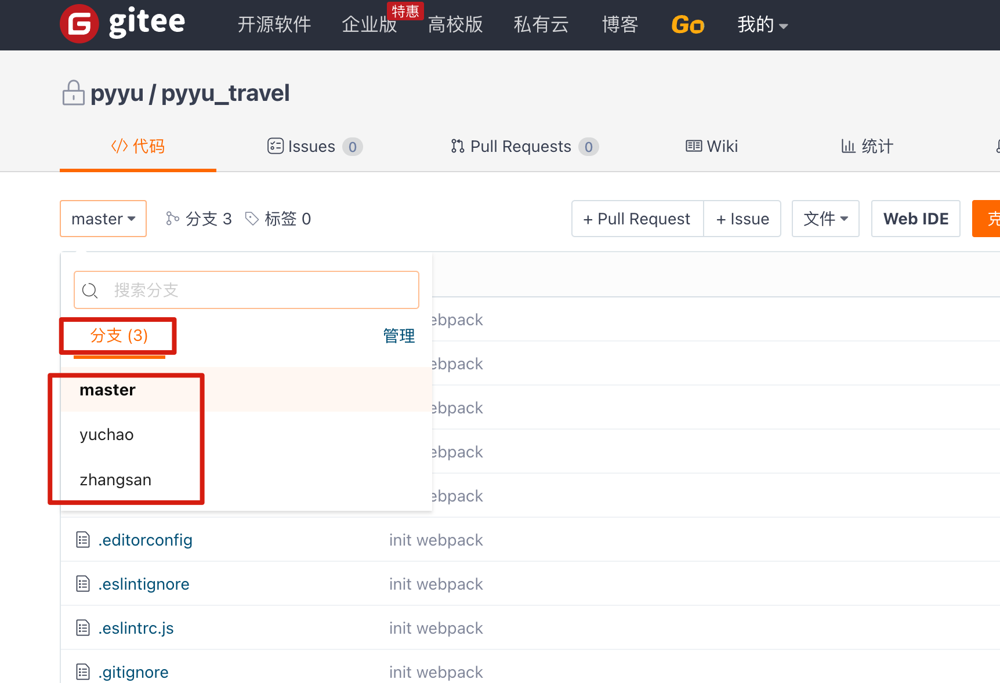
2.git标签
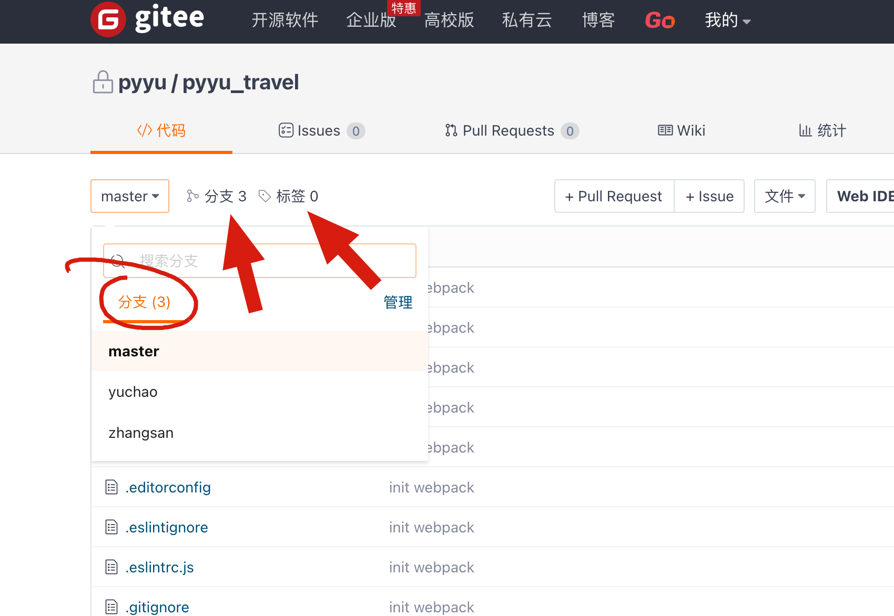
Git仓库内的数据发生变化时，我们经常会打上一个类似于软件版本的标签tag，这样通过标签就可以把版本库中的某个版本给记录下来，便于以后我们可以将特定的数据取出来。
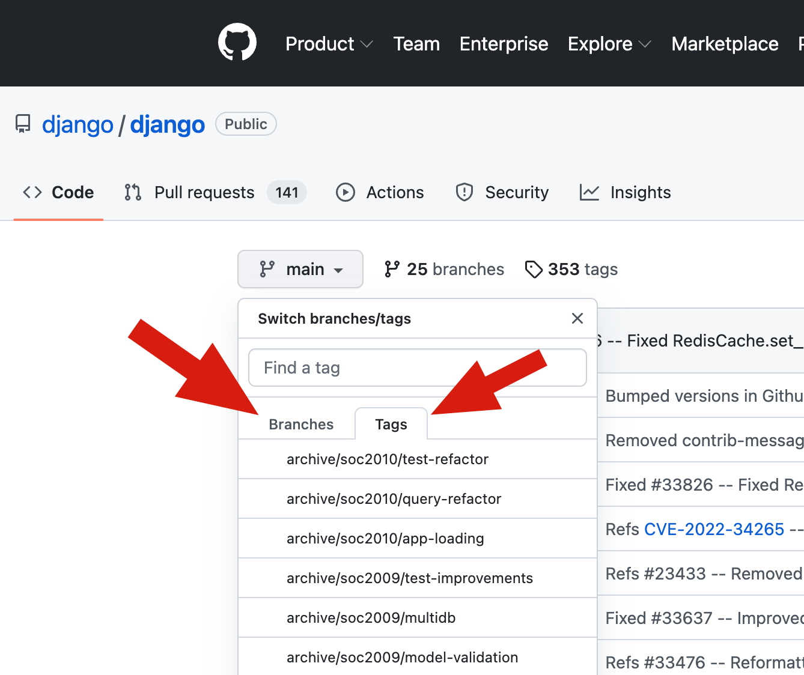
2.1 为啥用git标签功能
git不是已经有commit了吗，可以附加提交信息，为什么还要tag呢？
开发小王：请吧上周一发布的版本打包发布，commit_id是3f6cccf0708525b58fe191c80325b73a54adee99
运维小于：你这什么乱七八糟的数字，，，太难找了，请你换个方法
开发小王换了个方式：请吧上周一发布的版本打包，版本号是v1.2，按照tag v1.2，查找commit 记录就行了！
所以tag就是一个容易记住的名字，和某个commit记录绑定在一起。
官网
https://git-scm.com/book/zh/v2/Git-%E5%9F%BA%E7%A1%80-%E6%89%93%E6%A0%87%E7%AD%BE
因此tag和branch一般会配合使用
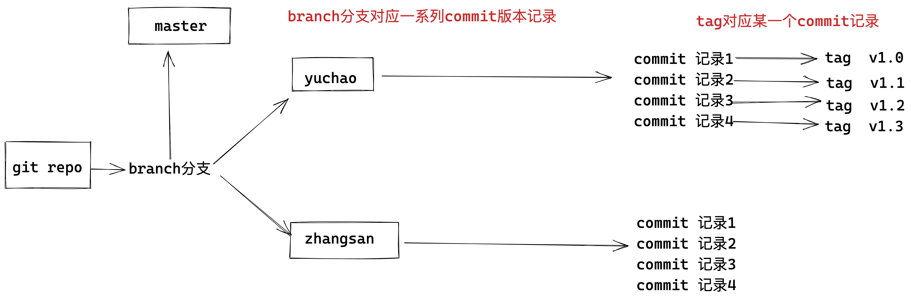
2.2 tag标签实践
对当前提交的代码创建标签，-a标签名称，-m标签描述。
1. 对当前以存在的commit 进行打标签
[root@www.yuchaoit.cn /home/yuchao/learn_git]#git log --oneline
07f7d81 master fix both modified laoliu.sh
5be8816 master 也修改了laoliu.sh
8396a73 zhangsan 搞破坏
164de7b yuchao 打印了一句话
049a22f v1 hello.sh
e9547df v3 就玩三次吧
9a3bd4d v2 添加了第二行数据
fb118ba first commit with line 1
2. 可以给当前最新的一个commit记录打标签
[root@www.yuchaoit.cn /home/yuchao/learn_git]#git tag -a 'v1.0' -m '修复了支付功能'
[root@www.yuchaoit.cn /home/yuchao/learn_git]#
[root@www.yuchaoit.cn /home/yuchao/learn_git]#
3.查看tag列表
[root@www.yuchaoit.cn /home/yuchao/learn_git]#git tag
v1.0
4.查看当前tag对应哪个commit
[root@www.yuchaoit.cn /home/yuchao/learn_git]#git show v1.0
tag v1.0
Tagger: pyyu <yc_uuu@163.com>
Date: Thu Jul 7 17:48:30 2022 +0800
修复了支付功能
commit 07f7d816bf052773c3f2ead1f3cc91299ede9e34
Merge: 5be8816 8396a73
Author: pyyu <yc_uuu@163.com>
Date: Wed Jul 6 20:24:08 2022 +0800
master fix both modified laoliu.sh
diff --cc laoliu.sh
index ca3bfc4,c0b43f0..77e26ae
--- a/laoliu.sh
+++ b/laoliu.sh
@@@ -2,4 -2,4 +2,5 @@@
好的超哥，我一定相信自己，加油努力，给自己一个满意的结果！！
兄弟们，git工具，一般是开发人员用的多，我们运维一般也就是上传，下载代码而已了。
+兄弟们，我是master，我在第5行写了一句话
+ 我是zhangsan，我就是来搞破坏的，你想咋地吧
[root@www.yuchaoit.cn /home/yuchao/learn_git]#
[root@www.yuchaoit.cn /home/yuchao/learn_git]#git log --oneline
07f7d81 master fix both modified laoliu.sh
5be8816 master 也修改了laoliu.sh
8396a73 zhangsan 搞破坏
164de7b yuchao 打印了一句话
049a22f v1 hello.sh
e9547df v3 就玩三次吧
9a3bd4d v2 添加了第二行数据
fb118ba first commit with line 1
5.查看标签列表，有哪些标签
[root@www.yuchaoit.cn /home/yuchao/learn_git]#git tag -l
v1.0
6.给指定的commit记录，打上标签
[root@www.yuchaoit.cn /home/yuchao/learn_git]#git tag -a 'v4' 8396a73 -m '张三你想干什么？'
7.查看tag且显示注释
[root@www.yuchaoit.cn /home/yuchao/learn_git]#git tag -l -n
v1.0 修复了支付功能
v4 张三你想干什么？
8.删除tag
[root@www.yuchaoit.cn /home/yuchao/learn_git]#git tag -d v4
Deleted tag 'v4' (was 60cade7)
[root@www.yuchaoit.cn /home/yuchao/learn_git]#git tag -d v1.0
Deleted tag 'v1.0' (was 2da278c)
[root@www.yuchaoit.cn /home/yuchao/learn_git]#
[root@www.yuchaoit.cn /home/yuchao/learn_git]#git tag -l
3.git远程仓库
3.1 github
由于一堵墙，你可能是访问不了的，或者太慢
3.2 码云Gitee
git是一个分布式版本控制系统，同一个git仓库可以分布在不同的机器上，但是开发团队必须保证在同一个网络中，且必须有一个项目的原始版本，通常的办法就是让一台电脑充当服务器的角色，每天24小时开机，其他每个人都可以在这台"服务器"仓库里克隆一份代码到自己的电脑上。
并且也可以把各自的代码提交到代码仓库里，也能从代码仓库拉取别人的提交。
这样的代码仓库服务器，我们可以自由的搭建，也可以选择使用免费的托管平台。
Git代码托管平台，首先推荐的是Github，世界范围内的开发者都在使用Github托管代码，可以找到大量优秀的开源项目，缺点就是访问可能会卡一点。
其次选择的就是Gitee，国内的代码托管平台，以及自建Gitlab服务器。
Gitee 提供免费的 Git 仓库，还集成了代码质量检测、项目演示等功能。
对于团队协作开发，Gitee 还提供了项目管理、代码托管、文档管理的服务。
官网地址
https://gitee.com/
3.3 码云创建空仓库
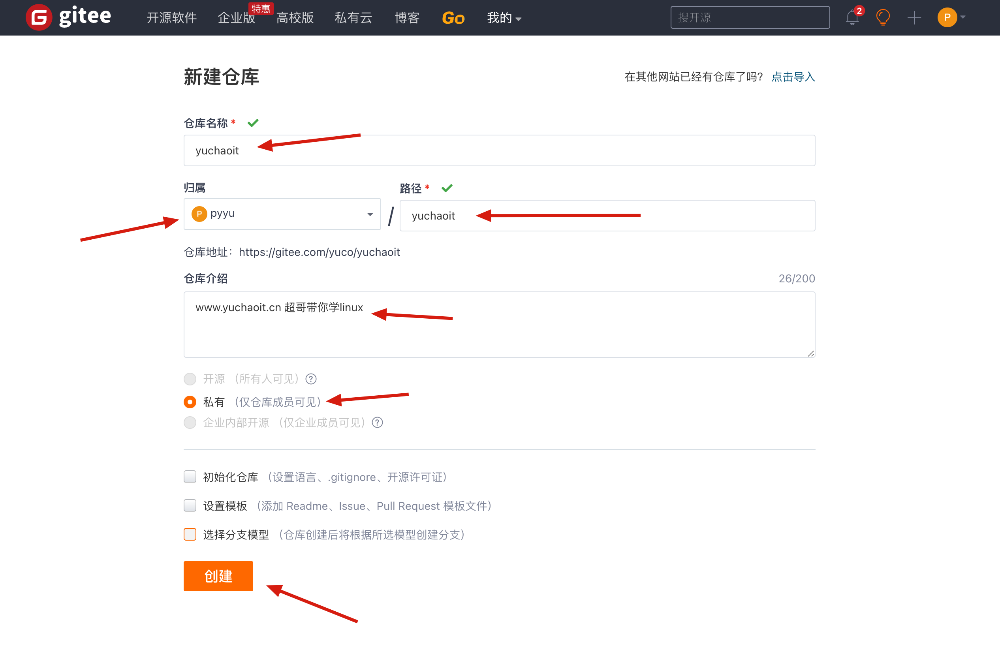
创建完毕空仓库后，页面出现如下仓库使用方式，我们可以选择HTTPS和SSH两种协议和该仓库通信。
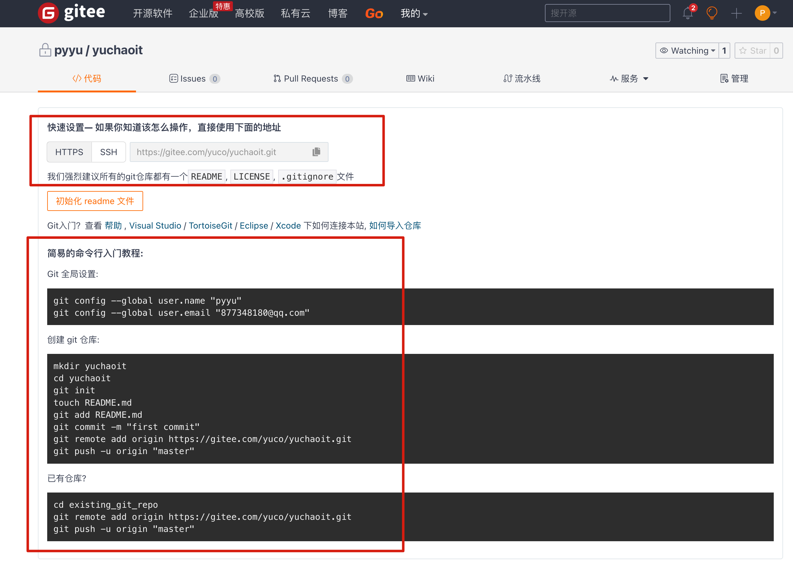
到这里，我们仓库就已经创建好了，接着就是要将本地客户端和服务端连接起来，存在于两种情况
- 本地已经有一个git仓库了
- 本地还没有git仓库
3.4 配置你的笔记本和码云仓库关联
以有了local repo（https需要输入账密）
采用https协议
# 进入你自己的本地仓库，也就是有 .git的目录
[root@www.yuchaoit.cn /home/yuchao/learn_git]#git remote add origin https://gitee.com/yuco/yuchaoit.git
# 推送代码
[root@www.yuchaoit.cn /home/yuchao/learn_git]#git push -u origin "master"
Username for 'https://gitee.com': 877348180@qq.com
Password for 'https://877348180@qq.com@gitee.com':
Counting objects: 24, done.
Compressing objects: 100% (20/20), done.
Writing objects: 100% (24/24), 2.23 KiB | 0 bytes/s, done.
Total 24 (delta 8), reused 0 (delta 0)
remote: Powered by GITEE.COM [GNK-6.3]
To https://gitee.com/yuco/yuchaoit.git
* [new branch] master -> master
Branch master set up to track remote branch master from origin.
3. 查看远程仓库的信息
[root@www.yuchaoit.cn /home/yuchao/learn_git]#git remote -v
origin https://gitee.com/yuco/yuchaoit.git (fetch)
origin https://gitee.com/yuco/yuchaoit.git (push)
4.删除远程仓库的地址信息，也就是断开你local repo 和 码云repo的关系了
[root@www.yuchaoit.cn /home/yuchao/learn_git]#git remote remove origin
[root@www.yuchaoit.cn /home/yuchao/learn_git]#
[root@www.yuchaoit.cn /home/yuchao/learn_git]#git remote -v
5.重新设置即可
git remote add origin https://gitee.com/yuco/yuchaoit.git
查看你推送上去的数据
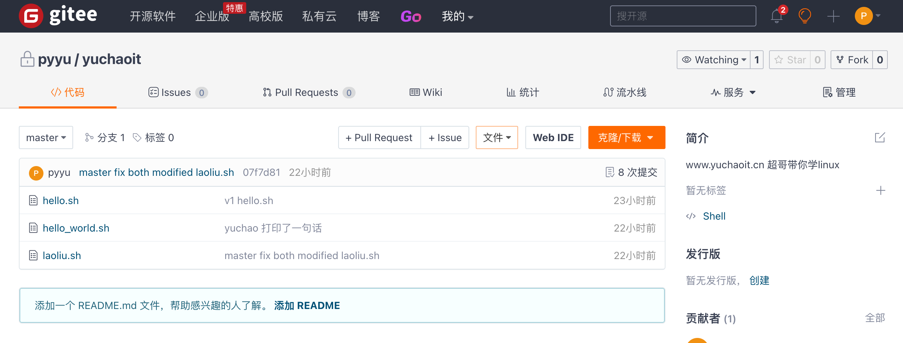
3.5 配置ssh免密推送代码
可以直接访问地址
https://gitee.com/profile/sshkeys
我们要在客户端生成key，结合gitee实现无密码登录，在linux和windows均可以使用ssh-keygen命令生成，需要注意的是在windows下只能生成rsa加密方式的key。
ssh-keygen 一路回车到底即可
[root@www.yuchaoit.cn /home/yuchao/learn_git]#cat ~/.ssh/id_rsa.pub
修改远程仓库的别名，改为git协议
[root@www.yuchaoit.cn /home/yuchao/learn_git]#git remote -v
origin https://gitee.com/yuco/yuchaoit.git (fetch)
origin https://gitee.com/yuco/yuchaoit.git (push)
修改orgin别名的地址
git@gitee.com:yuco/yuchaoit.git
[root@www.yuchaoit.cn /home/yuchao/learn_git]#git remote set-url origin git@gitee.com:yuco/yuchaoit.git
[root@www.yuchaoit.cn /home/yuchao/learn_git]#
[root@www.yuchaoit.cn /home/yuchao/learn_git]#git remote -v
origin git@gitee.com:yuco/yuchaoit.git (fetch)
origin git@gitee.com:yuco/yuchaoit.git (push)
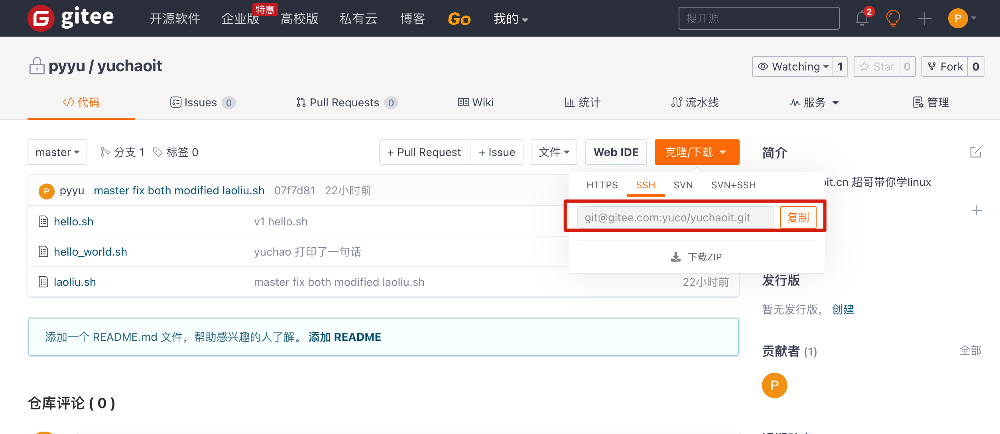
测试加点代码，加上tag，然后再推送试试
[root@www.yuchaoit.cn /home/yuchao/learn_git]#git status
# On branch master
nothing to commit, working directory clean
[root@www.yuchaoit.cn /home/yuchao/learn_git]#
[root@www.yuchaoit.cn /home/yuchao/learn_git]#ll
total 12
-rw-r--r-- 1 root root 33 Jul 6 20:07 hello.sh
-rw-r--r-- 1 root root 53 Jul 6 20:14 hello_world.sh
-rw-r--r-- 1 root root 384 Jul 6 20:23 laoliu.sh
[root@www.yuchaoit.cn /home/yuchao/learn_git]#
[root@www.yuchaoit.cn /home/yuchao/learn_git]#echo "你看这个灯，它又大又亮" > 吴亦凡^C
[root@www.yuchaoit.cn /home/yuchao/learn_git]#
[root@www.yuchaoit.cn /home/yuchao/learn_git]#
[root@www.yuchaoit.cn /home/yuchao/learn_git]#echo '鸡你太美 嘿嘿嘿' > caixukun.log
[root@www.yuchaoit.cn /home/yuchao/learn_git]#git add .
[root@www.yuchaoit.cn /home/yuchao/learn_git]#
[root@www.yuchaoit.cn /home/yuchao/learn_git]#git commit -m '两年半练习生来也'
[master 37e1511] 两年半练习生来也
1 file changed, 1 insertion(+)
create mode 100644 caixukun.log
[root@www.yuchaoit.cn /home/yuchao/learn_git]#git tag -a 'v1' -m '第一版菜徐琨'
推送数据
[root@www.yuchaoit.cn /home/yuchao/learn_git]#git push origin master
3.6 克隆远程仓库
除了我们可以在本地创建目录，写代码，通过git管理版本，最后提交到远程仓库外，还有一种玩法。
也就是直接下载、克隆远程仓库中的源代码。
一种是直接克隆公开的源代码。
还有一种克隆私有的源代码，就需要账号密码验证了。
克隆公开仓库
克隆堡垒机jumpserver的源码
[root@www.yuchaoit.cn /home/yuchao]#pwd
/home/yuchao
[root@www.yuchaoit.cn /home/yuchao]#ls
learn_git
[root@www.yuchaoit.cn /home/yuchao]#git clone git@gitee.com:fit2cloud-feizhiyun/Jumpserver.git
Cloning into 'Jumpserver'...
remote: Enumerating objects: 73544, done.
remote: Counting objects: 100% (7202/7202), done.
remote: Compressing objects: 100% (2866/2866), done.
remote: Total 73544 (delta 4976), reused 6070 (delta 3979), pack-reused 66342
Receiving objects: 100% (73544/73544), 63.46 MiB | 13.86 MiB/s, done.
Resolving deltas: 100% (51447/51447), done.
[root@www.yuchaoit.cn /home/yuchao]#ls
Jumpserver learn_git
[root@www.yuchaoit.cn /home/yuchao/Jumpserver]#git log --oneline -3
8ab4f6f docs: 添加 pr 提示说明
5a37540 docs: 修改贡献提示
1c1d507 Create CONTRIBUTING.md
[root@www.yuchaoit.cn /home/yuchao/Jumpserver]#git remote -v
origin git@gitee.com:fit2cloud-feizhiyun/Jumpserver.git (fetch)
origin git@gitee.com:fit2cloud-feizhiyun/Jumpserver.git (push)
克隆自己公司的代码
1.运维小王克隆代码到本地
git clone git@gitee.com:yuco/yuchaoit.git
[root@www.yuchaoit.cn /home/xiaowang01]#git clone git@gitee.com:yuco/yuchaoit.git
Cloning into 'yuchaoit'...
remote: Enumerating objects: 27, done.
remote: Counting objects: 100% (27/27), done.
remote: Compressing objects: 100% (22/22), done.
Receiving objects: 100% (27/27), done.
remote: Total 27 (delta 9), reused 0 (delta 0), pack-reused 0
Resolving deltas: 100% (9/9), done.
[root@www.yuchaoit.cn /home/xiaowang01]#ls
yuchaoit
[root@www.yuchaoit.cn /home/xiaowang01]#cd yuchaoit/
[root@www.yuchaoit.cn /home/xiaowang01/yuchaoit]#ls
caixukun.log hello.sh hello_world.sh laoliu.sh
2. 创建分支，写代码
[root@www.yuchaoit.cn /home/xiaowang01/yuchaoit]#git checkout -b xiaowang
Switched to a new branch 'xiaowang'
[root@www.yuchaoit.cn /home/xiaowang01/yuchaoit]#
[root@www.yuchaoit.cn /home/xiaowang01/yuchaoit]#echo "我是小王，我写了点shell代码" > xiaowang.sh
[root@www.yuchaoit.cn /home/xiaowang01/yuchaoit]#
[root@www.yuchaoit.cn /home/xiaowang01/yuchaoit]#git add .
[root@www.yuchaoit.cn /home/xiaowang01/yuchaoit]#
[root@www.yuchaoit.cn /home/xiaowang01/yuchaoit]#git commit -m '小王写了个脚本'
[xiaowang a801b50] 小王写了个脚本
1 file changed, 1 insertion(+)
create mode 100644 xiaowang.sh
3.推送到代码仓库（xiaowang分支）
[root@www.yuchaoit.cn /home/xiaowang01/yuchaoit]#git push -u origin xiaowang
Counting objects: 4, done.
Compressing objects: 100% (2/2), done.
Writing objects: 100% (3/3), 334 bytes | 0 bytes/s, done.
Total 3 (delta 1), reused 0 (delta 0)
remote: Powered by GITEE.COM [GNK-6.3]
remote: Create a pull request for 'xiaowang' on Gitee by visiting:
remote: https://gitee.com/yuco/yuchaoit/pull/new/yuco:xiaowang...yuco:master
To git@gitee.com:yuco/yuchaoit.git
* [new branch] xiaowang -> xiaowang
Branch xiaowang set up to track remote branch xiaowang from origin.
合并分支
1.网页端合并操作，创建合并的请求
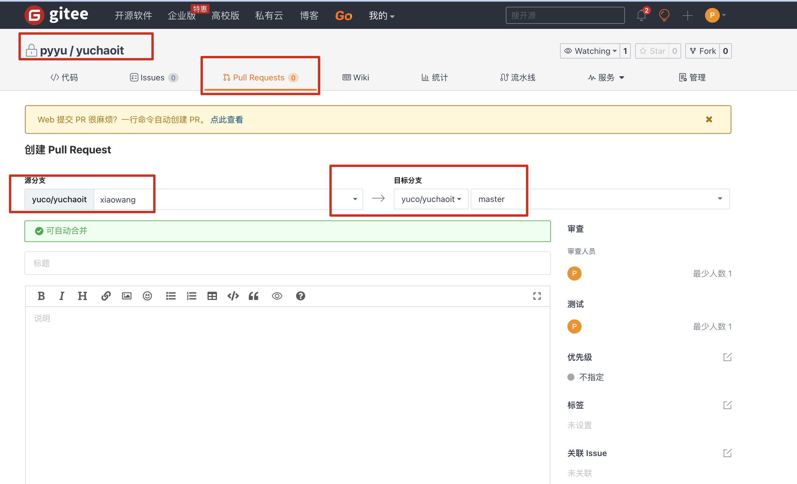
2.审查提交请求
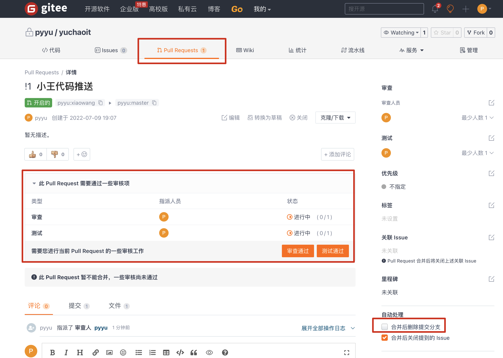
3.点击合并，且删除分支
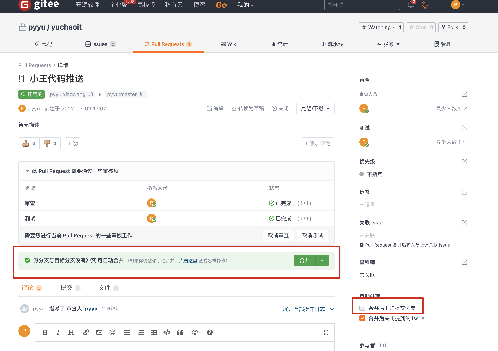
4.完成合并，分支的代码就被合并到主干线了
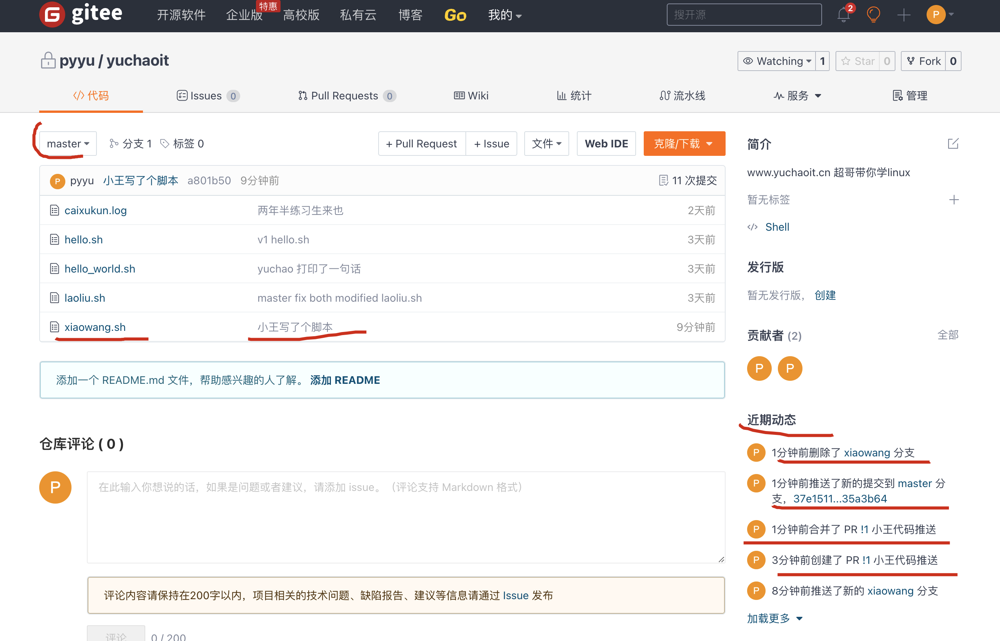